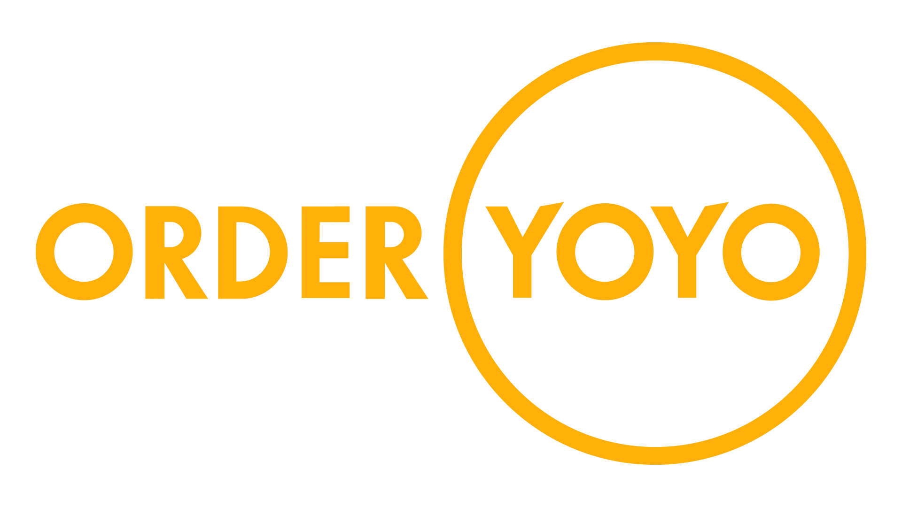

WHO AM I?
I'm disciplined, resolved, and a solution-minded person. Creativity is one of my greatest assets, and one I wield in abundance; I have many creative interests, but am also a critical thinker.
I've lived in many different countries (Denmark, England, Germany, the Netherlands) and have an unmatched worldview. Inclusive and thinking of the bigger picture, my internationality applies itself well to my work: it makes me understanding, and lends itself to empathy.
In my spare time, I like to draw digitally as well as play games, both on the computer, but also on pen and paper. I've danced Lindyhop for a few years due to my passion for old swing music. I'm always available on phone or email - feel free to reach out!
I'm disciplined, resolved, and a solution-minded person. Creativity is one of my greatest assets, and one I wield in abundance; I have many creative interests, but am also a critical thinker.
I've lived in many different countries (Denmark, England, Germany, the Netherlands) and have an unmatched worldview. Inclusive and thinking of the bigger picture, my internationality applies itself well to my work: it makes me understanding, and lends itself to empathy.
In my spare time, I like to draw digitally as well as play games, both on the computer, but also on pen and paper. I've danced Lindyhop for a few years due to my passion for old swing music. I'm always available on phone or email - feel free to reach out!
STATISTICS
- BIRTH: 19 - 08 - 2000
- ORIGIN: DENMARK
- LOCATION: COPENHAGEN
- GRADUATION: 2016
LINGUISTICS
- DANISH: NATIVE
- ENGLISH: NATIVE
- GERMAN: UNDERSTOOD
- DUTCH: UNDERSTOOD
- JAPANESE: BEGINNER
WORKING EXPERIENCE
2023-2025
OLYMPUS
CUSTOMER CARE SPECIALIST
Full time work in the Medicotechnical sector, with focus on customer care. I worked with Salesforce, SAP, Celonis and other ERP systems, and developed a good working relationship with both the Danish and Swedish public and private healthcare practices. I swapped to part-time for my studies.
2020-2021
ORDERYOYO
ADMINISTRATIVE COORDINATOR
A full year of work - OrderYOYO went public during my work here. I was in charge of a variety of administrative tasks and worked mostly independently and developed many competences both within the field of administration, but also food service and customer tech support.
2017-2018
STUDOCU
TRANSLATION & APPROVAL
I translated the entire webpage into Danish, as well as the newsletters, communications and emails. Over 60,000 people now see those translations every day. I organised and approved contributed documents by students, making them accessible for all and ensuring the quality of their content.
COMPETENCIES & EDUCATION
2024-2026
KEA - COPENHAGEN DESIGN ACADEMY
MULTIMEDIA DESIGN
Currently underway in Copenhagen with expected graduation in the summer of 2026.
- Adobe Creative Cloud
- Front-end Coding (CSS, HTML, JS)
- Marketing Techniques
- UI/UX Design Conventions
- Digital Designing (Figma)
2019-2020
AALBORG UNIVERSITY
MEDIALOGY
First semester completed and exams passed. Changed studies due to personal preferences.
- Basic Programming: Passed
- Problem-Based Learning: Passed
- Audio-Visual Sketching: 10
- End-of-semester Exam: 10
2016-2018
INTL. SCHOOL OF AMSTERDAM
INTERNATIONAL BACCALAUREATE
IBDP graduate of the International School of Amsterdam (ISA). Bilingual diploma received.
- English Language & Literature HL
- Biology HL
- Chemistry HL
- Information Technology SL